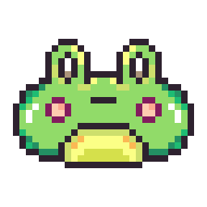
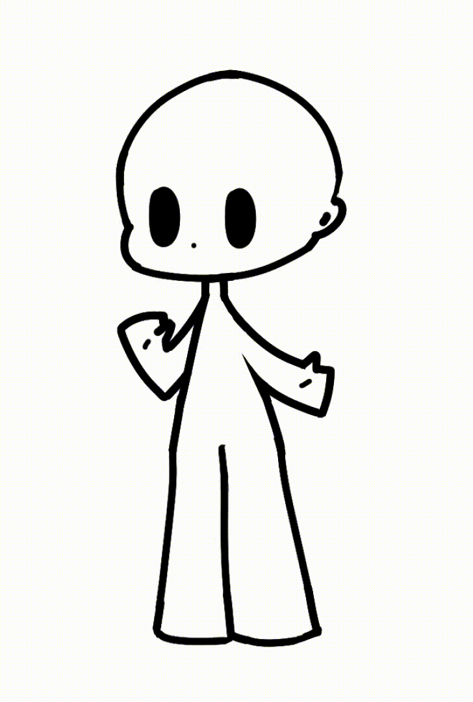
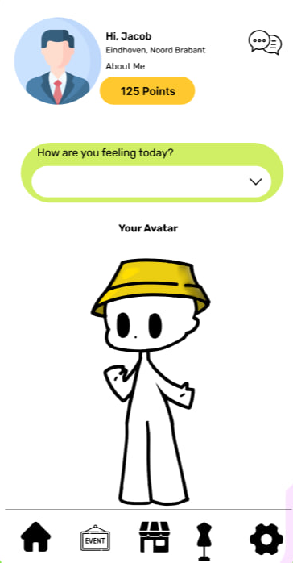
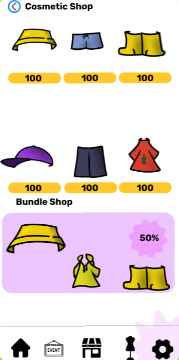

We had to develop a Web Application with the goal of Motivating young people (13 - 18 y.o.) to Socialize more.
I conducted a Series of Interviews in order to understand the Target Audience better. The Results showed that for the most part, younger people actually want to Socialize more. The main struggle was "Not knowing where/how to start" or the "Shame" in feeling lonely.

The Project went the following way:
- After getting the Concept approved, we started developing a Self Care App that would incentivize young people to go out more often. We used different Gamification methods, and in the end, agreed to use 'Daily Tasks' which offered 'Rewards' after completion.
- The 'Rewards' were in form of Points used for in-app purchases (such as Cosmetics for the User's Character) or Discount Coupons and Vouchers for Restaurants and other Social Attractions.
- After Showcasing the Concept to the Stakeholders ('Night of the Nerds' & 'JoinUs'), they told us that they were interested in Taking Over to continue Developing the idea even further. We were very happy to hear that and later offered them the source code for our "F.O.M.O." App.

This is a Timelapse of me creating the Character that people would be able to purchase in-game Cosmetics for. This way, the Users had a clear Visual Indicator of Progress. It followed a Simplistic Design in order to make every User's Character unique through the Added Cosmetics. A key inspiration was the design of Nintendo's "Mii" that also followed a simple base with lots and lots of additional elements.

They would also be able to display the Character on their Profile Page for other Users to see. This could create even more interactions between Users, now through the App's Chat.

This is how the Cosmetics Shop would look like in the App. It allowed to purchase Items Individually, as well as Item Bundles using the Points earned from completing Daily Tasks.